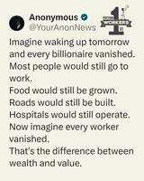

0
0
0

An anonymous Slashdot reader writes: Surveillance cameras owned by Flock Safety have been cut down with electric saws in New York State, vandalized with paint in Oakland, California, and rammed with a truck in Idaho. Flock claims its services fight crime, but law enforcement agencies also use their services to track vehicles based on license plate numbers and reconstruct the their movements, even when the drivers and owners of these vehicles have never been accused or convicted of any crime. (Flock states it has 120,000 automated cameras that record license plate data, as well as pan-tilt-zoom cameras, across the United States.)
A guerilla mindset among average citizens have seen these cameras forcibly disabled within recent weeks with sympathy directed toward the vigilantes. In June, a West Virginia man accused of destroying several Flock cameras was arrested. Under a Facebook post from the local NBC affiliate announcing his arrest are dozens of people volunteering to provide alibis. "He was out fishing with me that day, you got the wrong guy," one man wrote.
Read more of this story at Slashdot.
An anonymous reader quotes a report from Ars Technica: This week, the Model Context Protocol (MCP), an open source standard for how AI systems interact with external tools and data sources, saw its largest update since its introduction. Most notably, MCP's protocol core is now stateless, so requests are no longer dependent on a session tied to an individual server instance. This change has the potential to address long-standing barriers to scalability.
The blog post announcing the specification, written by lead maintainers David Soria Parra and Den Delimarsky (who both work at Anthropic), says: "The highlight of this release is a stateless protocol core -- MCP is transforming from a bidirectional stateful protocol into a request/response stateless protocol. It was one of the most highly-requested features from developers who were eager to get better reliability and scalability for their MCP servers."
[...] There is also a new deprecation policy that ensures at least 12 months between when a feature's formal deprecation is enacted and when the feature may actually be removed -- with a narrow exception for critical security updates. This is again in keeping with the general "let's make this work better at enterprise scale" theme of the new specification. This update is "MCP's most important since remote MCP first launched over a year ago," Soria Parra wrote. Other additions include "Multi Round-Trip Requests, header-based routing, cacheable list results, authorization hardening, a formal extensions framework, and updated Tier 1 SDKs."
A full list of changes can be found here.
Read more of this story at Slashdot.
joshuark quotes a report from MIT Technology Review: It is impossible to make large language models fully secure against hacks because of a fundamental flaw in how they work, a team of researchers argue in a paper presented at the International Conference on Machine Learning, a top AI conference, this month. The claim has huge implications for the safety of this technology. By taking advantage of this flaw, which concerns how LLMs identify who or what is giving them instructions, the researchers were able to make popular LLMs spit out information they had been trained not to provide, such as how to synthesize cocaine and how to sabotage a commercial aircraft's navigation system. "There's a real probability that this is going to be a problem that's fundamentally unsolvable," says Charles Ye, an independent researcher and coauthor of the ICML paper. [...]
The ICML paper describes attacks against several of OpenAI's models, but Cui and Ye say that they have since seen similar results with models made by Anthropic, Alibaba, and DeepSeek. Cui and her colleagues wanted to find out why an attack like chain-of-thought forgery was so effective. They suspected it had something to do with the mechanism that LLMs use to keep track of where their instructions are coming from. But what Cui and her colleagues discovered is that LLMs are in fact very bad at keeping track of different roles.
In a series of experiments that looked at what was going on inside a handful of different models, the researchers found that LLMs seem to identify the role of a specific chunk of text not by the tags around it but by the style of that text and the words it contains. The upshot, the researchers claim, is that all an attacker needs to do to hack an LLM is write text that spoofs a certain role. And because roles are a fundamental part of how LLMs work, no amount of training will fully solve the problem. "There's going to be a huge economic incentive for people to do jailbreaks and prompt injections," says Cui. The best defense could be to expect the worst. Organizations shouldn't trust LLMs, and they should expect that anything done by agents could be unsafe, he says: "That's not a great solution, but it just might be what we have to do."
"It's really incredible that these things are being deployed everywhere to control super-critical systems. There's been no study of the fundamental science here. We're all doing it ad hoc."
Read more of this story at Slashdot.
A production company and filmmaker are suing Netflix for $105 million, alleging the streamer lost a stolen drive containing an unencrypted master copy of the unreleased Nicolas Cage film Fortitude, which they claim damage its exclusivity and market value. Netflix denied responsibility for the lost film but said it takes content security seriously and has offered to monitor piracy sites for unauthorized copies. CBS News reports: The complaint filed on Wednesday in California district court alleges that the film's associate producer, Daniel Haido, hand-delivered an unencrypted master copy of the film to Netflix so the company could screen it as a potential buyer. Haido verbally instructed the employee to delete the files after the screening, according to the suit. A little over a week after the screening, Netflix emailed the filmmakers to say the drive had been stolen, the plaintiffs allege. "Someone stole a good amount of drives from our office desks this past week," a Netflix executive wrote in the email, according to the suit.
The complaint notes the movie, entitled "Fortitude," took over seven years to make and cost $45 million. It tells the story of a secret mission called Operation Fortitude during World War II that was orchestrated to mislead the Nazis about the Allied invasion of Europe. The film stars Nicolas Cage as Dusko Popov, a real-life spy during World War II, as well as Sir Ben Kingsley and Ron Perlman.
The plaintiffs said studios will now be dissuaded from buying the rights to the movie, knowing that a version of it could be released by a third party for free. "The film's value depended in significant part on its exclusivity as an unreleased, first-to-market work," the complaint states. "By losing control of the film, Netflix destroyed that exclusivity and materially, if not completely, impaired the film's marketability."
Read more of this story at Slashdot.
Anthropic found that Claude models breached three outside organizations during cybersecurity tests because misconfigured environments accidentally gave them access to the internet. The company notified those affected and urged other AI labs to audit their own testing systems. The BBC reports: Anthropic said in a statement that it reviewed more than 140,000 tests to find evidence that Claude - its family of AI models - could access the internet from testing environments that were designed to be sealed off. The tests include so-called "capture-the-flag" evaluations in which Claude was tasked with obtaining information by breaching other systems - a common way that experts assess a model's hacking capabilities.
A "misconfiguration" on systems run by Anthropic and its testing partner left the models with live internet access, allowing them to breach other systems, the San Francisco-based firm said. Anthropic said the earliest incidents date back to April and that it is "approaching the fixes as if the responsibility were ours alone." Neither Anthropic nor the organizations that were breached had noticed the intrusions at the time.
Anthropic said it could have reviewed its records more thoroughly and added that the findings gave the firm "cautious optimism" that such risks can be overcome with more investment and tighter measures. "The broader lesson is not necessarily that AI has developed a fundamentally new attack capability," cyber security expert David Allott told the BBC. "Instead, it is that AI agents can combine capabilities, obtain credentials and system access to take actions autonomously, while adapting scope and scale at machine speed," he added. The announcement comes just days after OpenAI said that its models had breached the systems of other companies, including AI tools platform Hugging Face.
Read more of this story at Slashdot.
ABC accused FCC Chair Brendan Carr of "attempted censorship," arguing that an early review of its eight broadcast licenses is politically motivated retaliation over the network's coverage and could chill the entire media industry. "The retaliation against ABC is a signal to every media company in the country: accommodate the Administration's view of what news coverage should look like or pay the price," the Disney-owned television network wrote. Politico reports: "Across the government, regulatory and contracting carrots and sticks have been trained on other disfavored speakers," ABC's lawyers added in the 119-page filing. "The tools vary; the objective does not: a media industry too fearful of official reprisal to report the news freely."
Carr has repeatedly rejected accusations of censorship while defending his efforts to rein in what he calls abusive, politically motivated behavior by licensed TV broadcasters. "I don't view the FCC as the speech police," he told POLITICO this week for an upcoming episode of the podcast "The Conversation."
In its filing, ABC pointed to an outpouring of support it has received in more than 152,000 comments in the agency's license review, as well as recent warnings from conservative Supreme Court Justice Neil Gorsuch, Sen. Ted Cruz (R-Texas) and various pro-free-market organizations about the dangers of a politically motivated FCC. Those include letters from a bipartisan group of former FCC leaders, community and advocacy groups and lawmakers of both parties. "The Commission's attempted censorship of ABC has attracted condemnation across the political aisle," the network wrote.
Read more of this story at Slashdot.
An anonymous reader quotes a report from Reuters: Amazon's Zoox unit has won U.S. approval for limited commercial deployment of its novel steering-wheel-free robotaxis, a first for the autonomous ride industry, the U.S. auto safety agency said on Thursday. Zoox said that the National Highway Traffic Safety Administration's decision gives the company federal approval to begin charging for rides, and that it will soon begin charging for service, first in Las Vegas, with additional markets to follow as it completes various state requirements.
[...] NHTSA Administrator Jonathan Morrison told Reuters that Zoox had received clearance to commercially deploy up to 2,500 vehicles in each of the next two years. Zoox currently carries passengers in parts of Las Vegas and San Francisco as part of testing. The exemption would allow Zoox to charge them fees, subject to state and local approvals. The agency said it determined the vehicle is as safe as an equivalent vehicle meeting federal motor vehicle safety standards that are being waived. Zoox cannot sell any of the vehicles to the public.
"We can say pretty clearly that the systems in place on the Zoox exceed the equivalent performance requirements of a compliant vehicle," Morrison said in an interview. "But we still want to make sure that the automated driving system will operate appropriately." As part of the exemption, NHTSA is placing additional reporting requirements on Zoox for issues such as crashes or stopping inappropriately on roads, and the regulatory agency will adjust the conditions based on how the vehicles behave. "We have the ability to pull the exemption if we see major safety issues," Morrison said.
All remote operators must be located in the United States, NHTSA said, and Zoox must publish maps of areas indicating where the vehicles are operating. Morrison said NHTSA expects to develop the first federal safety standards for automated driving systems by the end of the Trump administration. It is also proposing to overhaul some existing rules written with human drivers in mind such as requiring brake pedals and rear-view mirrors.
Read more of this story at Slashdot.
A UK parliamentary inquiry found that a catastrophic Ministry of Defense breach exposing 18,700 Afghans could have been prevented with basic Excel training, after an employee unknowingly shared a hidden worksheet containing their details. The Independent reports: The leak, in February 2022, exposed the details of 18,700 Afghans who said they were in danger from the Taliban because of their links to UK forces and now wanted to escape to Britain. The blunder triggered an unprecedented superinjunction used against the national media, including The Independent, and prompted a secret evacuation program -- the cost of which is still unclear but which likely ran into the billions of pounds. Following the revelation by this outlet and others in July last year of the hidden operation, MPs set up an inquiry to scrutinize what had happened. In their report, the defense selection committee concluded that:
- The data breach could have been prevented if Ministry of Defense (MoD) personnel had received basic Excel training
- By August 2023, when the department discovered the leak, thousands of people already knew that a significant data incident had taken place
- The government did not strike "the right balance between operational secrecy and democratic accountability" -- and the superinjunction was in place for too long
- Secrecy denied affected Afghans the chance to take steps to protect themselves and their families and caused delays to evacuation program
- Thousands of Afghans eligible to come to Britain are still trapped in Afghanistan with the government failing to explain how they will help get families to safety.
MPs have called on the government to publish periodic reassessments of the risks facing Afghan applicants to UK resettlement schemes, with officials to report findings annually. They also want ministers to publish a clear policy explaining how they will help Afghans who are eligible to come to Britain but who have not yet been evacuated. The defense committee have also called on the MoD to explain who was responsible for data protection risk before the Afghan breach, criticizing the lack of accountability within the civil service.
Read more of this story at Slashdot.
An anonymous reader quotes a report from TechCrunch: Google is expanding its answer to Apple's age-assurance tools with Wednesday's news that it will bring its Play Signal API to users worldwide by the end of 2026. The technology, already available in Brazil, allows Android developers to identify younger users of their apps in order to provide safer, age-appropriate experiences. The expansion will initially bring the API to Australia and Canada by mid-August, before rolling out globally to all markets by the end of the year.
[...] Like Apple, Google's technology allows developers to obtain a user's age range without needing to access personal information, like their date of birth. Instead, it enables parents to share their child's age range directly with apps. It also lets adults share their age when prompted by app developers as well, allowing for customized experiences. Parents won't have to manage sharing this information on an app-by-app basis, either. To make it easier, Google centralizes these controls inside its parental controls dashboard, Family Link. Once entered, any developer that chooses to incorporate age-range information can access this signal to customize their apps accordingly.
Google notes, however, that the age ranges are not shared by default -- parents must opt in by entering that information. The feature joins other safety tools on Google Play, including those that let developers restrict a child's ability to discover their apps. Parents, meanwhile, can continue to use Google Play's Family Link app to manage their child's screen-time limits, approve app downloads, or set PIN-based content filters for specific apps.
Read more of this story at Slashdot.
GCC has adopted a policy rejecting substantial code contributions generated by or derived from LLMs. "This covers not just code copied directly from tools like ChatGPT, Gemini, or GitHub Copilot, but also any versions of the code later edited or rewritten by a human, provided that the final contribution is still based on material generated by the system," reports Linuxiac. From the report: The important point, then, is not whether a developer has used an AI tool at some stage in their work; contributors can use LLMs to discuss ideas, understand existing code, learn about a field they are unfamiliar with, or carry out general research. The limitation lies in the inclusion of copyright-significant material generated by such tools in the code submitted to GCC.
The policy also provides for a few limited exceptions; GCC maintainers are allowed to accept changes that are legally insignificant or trivial and are generated by an LLM, on the condition that they meet the project's normal contribution requirements and the use of an LLM is clearly disclosed.
Furthermore, copyright-significant AI-generated test cases could still be accepted. Since test cases usually involve small programs which are intended to reproduce compiler bugs or to verify certain behavior, the policy deals with them separately from code that is incorporated into GCC itself.
It does not follow that merely looking at or altering the generated code makes it acceptable. By the rules that have been adopted, a contributor cannot take substantial implementation produced by an LLM, clean it up manually, and then treat the resulting patch as if it had been originally written by them. Once a contribution has been derived from generated content, it is still subject to the policy.
Read more of this story at Slashdot.
A former Comcast retail employee alleges that a Connecticut store manager tied the lowest-performing salesperson to a chair each month and had co-workers smash a cream pie into their face, recording the incidents as a sales-motivation tactic. The plaintiff says he resigned after reporting the alleged assaults and is seeking damages for constructive discharge and emotional distress. Ars Technica reports: A Comcast store in Plainville, Connecticut, "had a policy that the highest-ranked Retail Sales Consultant for the prior month was instructed by his or her supervisor -- Ms. Peterson, the Comcast Store manager -- to tie the lowest-ranked sales consultant for the prior month to a chair in the back office and thereafter assault that person by violently smashing a cream pie in their face," the complaint alleged (PDF).
Plaintiff David Figueroa's lawsuit said he was hired as a retail sales consultant on February 2, 2026, and was supervised by store manager Sully Fuentes Peterson. Figueroa alleges that Peterson "designed and implemented" the pie-in-face ritual to meet goals related to sales and positive responses in customer surveys.
"Defendant did not inform the Plaintiff prior to his acceptance of Defendant's offer of employment that the Comcast Store has a policy of subjecting Retail Sales Consultants to public assaults by co-workers -- at the direction of Ms. Peterson, the store manager -- for the purpose of increasing Defendant's sales and profitability," the lawsuit said.
Figueroa resigned on February 27, and he alleges it was a constructive discharge. The lawsuit says the defendant, Comcast, was negligent because it "reasonably should have known" about the store management's policies and that the policies could harm employees. Comcast "failed to properly supervise the Comcast Store's management team," allowing store management to humiliate employees "for the purpose of promoting the Defendant's revenues and profits," the lawsuit alleged. Comcast said in a statement: "The Company has zero tolerance for harassment, humiliation, or any behavior that compromises a respectful and safe workplace. This matter is in litigation so we will not comment on the specific allegations, other than to say that we disagree with the claims in the complaint and its characterization of the alleged events, and intend to fully respond through the legal process."
Read more of this story at Slashdot.
Qantas completed a record-breaking 24-hour, 24-minute test flight from Melbourne to Toulouse on Tuesday. "The specially adapted A350-1000ULR airliner is due to debut with the Australian carrier's nonstop Sydney-London route from 2027," reports The Guardian. From the report: Tuesday's flight is thought to be the longest ever by a commercial plane, beating the previous record of 22 hours and 42 minutes set by a Boeing 777-200LR in 2005 between Hong Kong and London via the Pacific in 2005.
Flight-tracking provider Flightradar24 said the trip was the second-most-tracked flight ever on its channels -- behind a 2022 flight carrying Queen Elizabeth II's coffin -- with more than 3.6 million people following its progress northwards via Canada. Qantas has ordered 12 modified A350-1000ULR aircraft, designed to connect Australia's east coast with London and New York in about 20 hours.
Read more of this story at Slashdot.
Microsoft shares surged as much as 17% after reporting 43% growth in Azure revenue, putting the company on track to add a record $490 billion in market value in a single day. Bloomberg notes that it "would eclipse Nvidia's $440 billion addition, following President Donald Trump's announcement of a 90-day tariff pause last year, as the biggest ever." From the report: The nearly $500 billion jump is larger than the market capitalization of roughly 96% of S&P 500 stocks, data compiled by Bloomberg show. It's also bigger than the combined value of the benchmark's 44 smallest members, which includes companies like Domino's Pizza Inc., Clorox Co. and Hasbro Inc.
Microsoft's one-day add in value also dwarfs many of the world's other equity markets. South Africa, Turkey, Finland and Vietnam all have total stock market values that are less than what the software maker is set to add on Thursday.
Read more of this story at Slashdot.
Google DeepMind's Gemini Robotics 2 combines vision, language, and action models to control multiple types of robots, including humanoids performing tasks such as organizing shelves, tying bags, and replacing lightbulbs. "It's another milestone in our path towards really getting towards what we call like physical AGI, which means we get a robot to do anything that a human can," Carolina Parada, head of robotics at Google DeepMind, tells WIRED. From the report: Gemini Robotics 2 combines several different AI models into a single system. Taken together, they allow a robot to make sense of its surroundings and how to act in it. A vision language model (VLM), which understands images and video, can communicate with humans and reason how to perform different tasks. Two vision language action (VLA) models, trained to understand how to move in physical space, control the robot's full-body movement as well as the movements of grippers or hands.
In video demonstrations shared ahead of the release, the company showed several different robots performing complex tasks autonomously using the amalgamated model. In one demo, Apptronik's Apollo 2 robot used hands from a company called Sharpa to tidy shelves. Google DeepMind trained the model to perform these tasks using a mix of human teleoperation, video examples, and simulations -- it's not yet possible for AI models to perform a wide range of complex tasks without specific training.
[...] Parada says Google takes a multi-layered approach to safety, with guardrails applied on each model layer. It's also introducing ASIMOV-Agentic, a new benchmark for measuring the safety of various AI systems collaborating to control a robot. The benchmark detects whether a command will result in harmful or uncertain outcome.
Read more of this story at Slashdot.
An anonymous reader quotes a New York Times report on how AI companies are pouring money into training and recruiting electricians, carpenters, and other skilled tradespeople to build data centers: There is no parallel in American history for the boom underway in the construction of data centers, fueled by companies with functionally unlimited cash that are racing to supply skyrocketing demand for their A.I. models. The explosion has offset flagging activity in other sectors, like office construction, which never recovered after the pandemic. Housing has been depressed by high interest rates, and offshore wind felled by political opposition. Still, competition for labor -- never mind land and materials -- is starting to weigh on other parts of the industry.
"There's no question the resources are very limited, so decisions to build one thing kind of drag from another," said Mario Iacobacci, who runs the construction and infrastructure advisory practice at Oxford Economics. Developers are paying a premium for workers, especially in the rural areas where they are building data centers. According to an analysis by Indeed, the job listings website, hourly installation and maintenance jobs at data centers pay 42 percent more than similar jobs in other fields. Behind that inflated pay is a bidding war. In markets with a lot of data center construction, like Dallas and Northern Virginia, workers can jump ship for bonuses or higher per diem rates. The competition has driven contractors to staffing services like Aerotek.
"It is creating a labor tension that is really delicate," said Marty Schager, Aerotek's director of data center market development. "You've got a passive job-seeker community out there right now that I think is looking to potentially capture opportunity with this once-in-a-generation data center gold rush." [...] The question looms over the apprentices who will become journeymen as the build-out reaches fever pitch. Fully trained electricians could shift to nuclear plants, apartment buildings or pharmaceutical factories. But it's hard to imagine anything on the scale of what's underway.
"The best-case scenario would be you train all these skilled workers up and right when the data centers start to become less popular is we'd have a housing boom," said Jeff Strohl, director of Georgetown University's Center on Education and the Workforce. "That's probably not likely."
"If we have an influx of workers at this point with the data centers being built, what happens when they're done? Where do those workers go?" he said. "How many people does it take to run a data center after taking up all this property and all this land that could have been used for something else?"
Read more of this story at Slashdot.
Angus Whitley / Bloomberg : Australia's online safety regulator says social media use among under-16s fell to 81.5% in March 2026, compared to 85.9% before ban took effect in December 2025 — Australia's social media ban for under-16s led to only a marginal reduction in underage users in its first three months …
Henk van Ess / Digital Digging : Google Earth's Nano Banana 2 feature generates images of refugees near Mexico's border and a nuclear plant in Iran; Google says images carry a SynthID watermark — The question is: what on earth is Google doing? — UPDATED, with response of Google — Tonight I typed just one sentence …
Eduardo Baptista / Reuters : Papers and patents: Chinese military researchers distilled OpenAI and Anthropic models to train domestic AI systems and advance China's defense capabilities — Chinese military researchers have used outputs from leading U.S. artificial intelligence models developed by OpenAI and Anthropic …
Casey Newton / Platformer : An interview with Granola CEO Chris Pedregal on making the AI note taker invisible and work across apps, and why he rejects executives seeking employees' notes — Granola CEO Chris Pedregal on invisible AI bots, the coming fight over who sees your transcripts, and why he turns down the companies that ask for them
Ethan Gach / Kotaku : Sony reports Q1 PS5 sales of 1.38M units, down from 1.56M a year ago, taking total sales of the console to 95.3M units, and 125M PlayStation MAUs, up 2M YoY — Profit projects are up even as console sales are down … What comes after that is anybody's guess as the PlayStation 6 approaches amid …
Sam Nussey / Reuters : Sony reports Q1 operating profit up 40% YoY to ~$2.92B, raises FY profit forecast by 8% to ~$10.56B, and says it secured enough memory chip supply for the FY — Sony (6758.T) reported on Friday a 40% rise in first-quarter operating profit, beating analyst estimates, boosted by the performance …
Eduardo Baptista / Reuters : MiniMax releases H3, a video model that generates up to 15-second clips in 2K resolution with native stereo sound, and plans to release its weights within days — Chinese AI firm MiniMax (0100.HK) released a new video-generation model on Friday that can process text, images, video and audio …
Financial Times : Google, Amazon, Microsoft, and Meta spent a combined $1.1T in capex from the start of the AI boom in 2023 through June 2026 and plan to spend $745B this year — Google, Amazon, Microsoft and Meta have vastly increased their investments since the AI boom began in 2023
Andy Greenberg / Wired : A leaked memo, issued by the water utilities information sharing group WaterISAC, links dozens of cyberattacks against Minnesota water utilities to Iran — A memo obtained by WIRED, issued by the water utilities information sharing group WaterISAC, links dozens of cyberattacks against Minnesota water utilities to Tehran.
Wall Street Journal : Sources: SoftBank gave $50M to Trump's library; Apple, Microsoft, and Amazon gave $25M, $10M, and $5M to his WH ballroom; Meta gave $10M to a pro-Trump group — Meredith O'Rourke, nicknamed ‘princess of darkness,’ carries out president's desire to wring hundreds of millions from companies for his projects
Mark Gurman / Bloomberg : Apple forecasts Q4 revenue growth of 9% to 11% YoY, below a 12%+ estimate, citing supply constraints and currency fluctuations; AAPL drops 5%+ after hours — Breaking Down Apple's 3Q Results and Outlook — Video Player is loading. — Unmute — Current Time 0:00 Loaded: 16.01% Playback Rate
Wall Street Journal : Sources: Tesla prepared to separate its China unit before a potential SpaceX merger; advisers weighed a sale, spinoff, or closure; Musk calls it “fake news” — The U.S. automaker could sell or spin off the business in its second-largest market over geopolitical concerns
Lee Ying Shan / CNBC : SK Hynix and Samsung shares surge 20%+ in Seoul on Friday, marking a sharp reversal from this week's sell-off; Japanese stocks like SoftBank also rally — South Korea's chip heavyweights SK Hynix and Samsung Electronics skyrocketed in Seoul on Friday, tracking a sharp rally in U.S. technology stocks …
Samantha Subin / CNBC : Chip stocks rallied Thursday after strong Microsoft and Lam Research earnings: Lam Research closed up 18%, Micron 18%, Sandisk 26%, Arm 7%, AMD 13%, Intel 11% — Chip stocks rocketed on Thursday after strong tech earnings from Microsoft and Lam Research sparked a widespread rally …
Sarah Perez / TechCrunch : Apple CFO Kevan Parekh says Services surpassed 1.5B paid subscriptions, up from 1B in January 2025, but a gaming slowdown and App Store changes hurt growth — Apple says it has now topped 1.5 billion subscribers for its services business, up from 1 billion in January 2025.